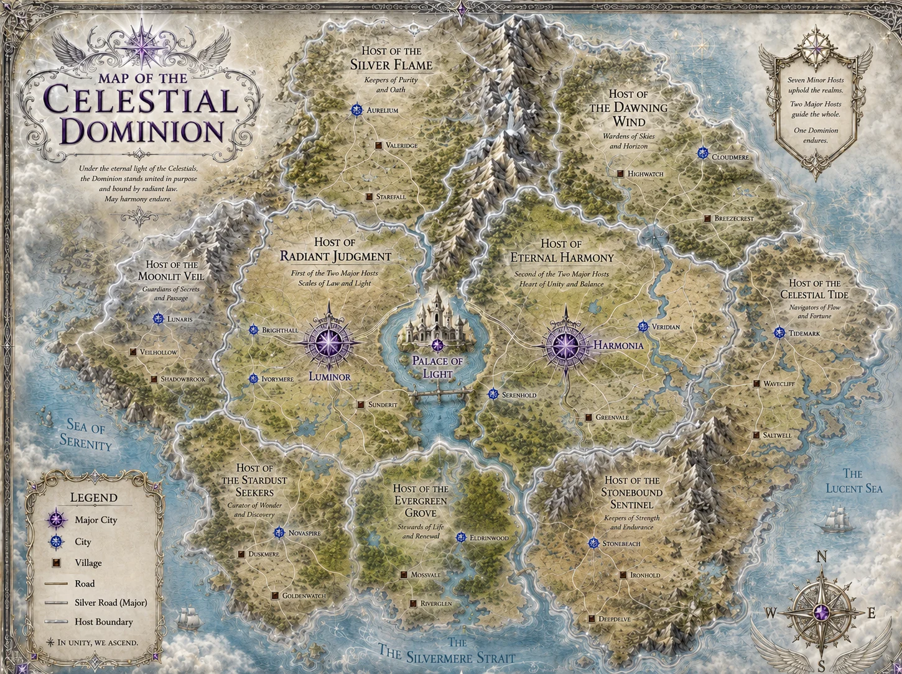

CELESTIAL DOMINION · FULL SPOILERS
CELESTIAL DOMINION
A Traveller’s Guide to Fairyland.
Open each section to explore the complete geography, politics, peoples, cities and customs recorded in Louisa Webb’s world guide.
← Return to Political Realms
General Geography
The Celestial Dominion lies south of the Fae and Dragon Empires. Despite its celestial name, it is not a floating realm or a separate heaven, but a vast terrestrial territory. Lumen describes herself as roughly as wide as the North and approximately twice as long. The Dominion stretches between the Sea of Serenity in the west, the Lucent Sea in the east and the Silvermere Strait along much of its southern coast. A great mountain spine divides much of the northern interior, while the south contains extensive forests, river valleys, wetlands and coastal lands.
The Dominion is divided into nine Hosts, which function as territorial and administrative regions. Two are Major Hosts, while seven are Minor Hosts. The map summarises the political philosophy neatly:
> Seven Minor Hosts uphold the realms. Two Major Hosts guide the whole. One Dominion endures.
Each Host has its own territorial government, while cities and larger towns may be administered by their own magistrates. Above them stands the Crown and the Council of the Celestial Dominion. The Palace of Light occupies deliberately neutral ground between the two Major Hosts rather than belonging fully to either.
The Two Major Hosts
Host of Radiant Judgment
Motto/Function: Scales of Law and Light
Major City: Luminor
Other established settlements: Brighthall, Ivorymere, Sunderit
The Host of Radiant Judgment occupies the western half of the Dominion's central heartland and is the First of the Two Major Hosts. Broad roads cross cultivated plains, lakes and river country before converging upon Luminor, one of the two great metropolitan centres shown on the Dominion map.
Its traditional association with law, judgement and institutional authority makes it one of the principal administrative centres of the Dominion. Luminor is consequently a natural location for courts, legal archives, governmental offices and institutions connected to the interpretation and enforcement of Dominion law.
Best known for: government, law, courts, administration and formal ceremony.
Traveller's advice: This is probably not the Host in which to begin a sentence with, “Technically, there isn't a law against it.”
Host of Eternal Harmony
Motto/Function: Heart of Unity and Balance
Major City: Harmonia
Other established settlements: Serenhold, Veridian, Greenvale
The Host of Eternal Harmony forms the eastern half of the Dominion's central heartland and is the Second of the Two Major Hosts. It is a comparatively green region of rivers, woodland, agricultural country and gently rolling landscapes.
Of all the Hosts, Eternal Harmony has received the most direct description in the manuscript. Greenvale is remembered as a peaceful place where different orders lived beside one another with considerably less concern for rank, doctrine and precedence than was usual around the royal court. Michael spent many of his childhood summers there, and the modern village still possesses comfortable inns and a quiet rural character.
Harmonia, farther north, is the Host's great urban centre and the eastern counterpart to Luminor.
Best known for: beautiful countryside, political moderation, peaceful settlements and the ideal of cooperation between different institutions.
Traveller's advice: If palace politics have given you a headache, Greenvale is probably where you should recover from it.
The Seven Minor Hosts
Host of the Silver Flame
Traditional role: Keepers of Purity and Oath
Principal City: Aurelium
Other settlements: Valeridge, Starfall
The Host of the Silver Flame occupies the northwestern interior. Its territory combines settled agricultural country and woodland with the great mountain range forming much of its eastern boundary. Aurelium lies at the centre of its road network, while Valeridge and Starfall occupy smaller settlements farther south.
The Host's identity is strongly connected with oaths, duty and purity of purpose. It is therefore an appropriate home for institutions concerned with sworn service, formal pledges and the preservation of old obligations.
Best known for: ancient oaths, ceremony, traditionalism and mountain scenery.
Host of the Dawning Wind
Traditional role: Wardens of Skies and Horizon
Principal City: Cloudmere
Other settlements: Highwatch, Breezecrest
The Host of the Dawning Wind occupies the northeastern Dominion, bounded by the great central mountains to the west and the Lucent Sea to the east. Forested uplands, lakes, ridges and broad open country give the region a markedly different character from the central plains.
Its settlements reflect that geography. Highwatch sits closer to the mountains, Breezecrest farther toward the coast, while Cloudmere serves as the principal city.
Best known for: high country, spectacular horizons, mountain routes and open skies.
Traveller's advice: Pack for wind. Then assume whoever told you how windy it gets was understating the matter.
Host of the Moonlit Veil
Traditional role: Guardians of Secrets and Passage
Principal City: Lunaris
Other settlements: Veilhollow, Shadowbrook
The Host of the Moonlit Veil occupies the western coastal reaches of the Dominion. Mountains, heavily wooded country and narrow valleys make it one of the more secluded regions on the map. The Sea of Serenity lies immediately beyond its western shore.
Its traditional responsibility for secrets and passage gives the Host a reputation for discretion, guarded routes and knowledge that is not casually shared. Lunaris is its principal city, while Veilhollow and Shadowbrook lie deeper within the region.
Best known for: secluded valleys, protected routes, discretion and moonlit woodland.
Traveller's advice: If a local tells you that a road does not exist, arguing that you can plainly see it is unlikely to improve the conversation.
Host of the Celestial Tide
Traditional role: Navigators of Flow and Fortune
Principal City: Tidemark
Other settlements: Wavecliff, Saltwell
The easternmost Host follows a long section of the Lucent Sea and contains one of the Dominion's most extensive systems of rivers, lakes and waterways. The geography makes the Host of the Celestial Tide the natural maritime and river-trade region of the Dominion.
Tidemark is its principal city and the obvious major coastal gateway, while Wavecliff and Saltwell serve smaller coastal communities farther south.
The Host's traditional connection to flow and fortune fits a region dependent upon tides, shipping, river traffic and the movement of goods.
Best known for: maritime trade, navigation, fishing, river transport and the Lucent Sea.
Major maritime centre: Tidemark
Host of the Stardust Seekers
Traditional role: Curators of Wonder and Discovery
Principal City: Novaspire
Other settlements: Duskmere, Goldenwatch
The Host of the Stardust Seekers occupies the southwestern Dominion along the Sea of Serenity and the western approaches to the Silvermere Strait. Its landscape consists of rolling country, woodland, rivers and a deeply indented coastline.
Its traditional dedication to wonder and discovery makes it the Dominion's natural home for exploration, observation and intellectual curiosity. Novaspire serves as its principal city, while the names Goldenwatch and Duskmere reflect a region culturally fascinated with horizons, light and the night sky.
Best known for: exploration, scholarship, observation and discovery.
This would be the logical Host for us to place observatories, astronomical colleges and exploratory institutions if we want to expand the Dominion's universities later. Those institutions are not yet specifically named in the manuscript.
Host of the Evergreen Grove
Traditional role: Stewards of Life and Renewal
Principal City: Eldrinwood
Other settlements: Mossvale, Riverglen
The Host of the Evergreen Grove occupies the lush south-central region. It is one of the most heavily forested parts of the Dominion, crossed by rivers that eventually empty into the Silvermere Strait. Eldrinwood sits within the northern forest, while Mossvale and Riverglen lie farther south among waterways and fertile lowlands.
The Host traditionally concerns itself with life, renewal and stewardship, making it one of the Dominion's greenest and most naturally productive territories.
Best known for: forests, rivers, fertile valleys, gardens and conservation.
Traveller's advice: Anyone who believes the Celestial Dominion consists entirely of white marble should be sent here until they apologise.
Host of the Stonebound Sentinel
Traditional role: Keepers of Strength and Endurance
Principal City: Stonebeach
Other settlements: Ironhold, Deepdelve
The Host of the Stonebound Sentinel dominates the mountainous southeast. Long ridges run through the territory almost to the Lucent Sea, while smaller valleys and roads connect isolated settlements to the coast.
Its geography naturally lends itself to fortification, quarrying, mining and defensive strongholds. The names Ironhold and Deepdelve suggest exactly the kind of hard, subterranean economy expected from the region, while Stonebeach provides access to the coast.
Best known for: mountains, stonework, fortifications, mines and endurance.
Traveller's advice: If someone names a town Ironhold, expect stairs.
The Palace of Light and the Capital
The Palace of Light stands at the political centre of the Dominion between the two Major Hosts. The map places it on a central body of water connected to the surrounding lands by causeways, visually reinforcing its status as neutral ground between Radiant Judgment and Eternal Harmony.
The palace is ancient and is far more than a royal residence. It is the physical manifestation of Lumen Caecans, the sentient entity whose boundaries encompass the Celestial Dominion. The Dominion forms part of Lumen, although Lumen herself is considerably more than the territory or palace alone.
Much of the modern palace is famous for white marble, towering halls, statues and monumental architecture, but this is not its original appearance. Earlier layers contained colourful mosaics, indoor gardens and broad water channels. Successive rulers concealed much of that colour beneath pale stone and plaster in pursuit of an increasingly austere idea of sacred architecture.
Outside, a great processional avenue descends from the palace toward the surrounding capital, lined by cypress trees, statues and silver lanterns. The city itself combines brilliant whitewashed buildings with blue-tiled roofs, flower-filled balconies, shaded courtyards and unusually extensive rooftop infrastructure. Roof gardens, terraces, bridges and upper-level entrances make the city function on several vertical levels rather than solely along its streets.
Best known for: the Crown, the Council, monumental architecture, political intrigue, contested history and Lumen herself.
Traveller's advice: Do not assume the historical interpretation written beneath a palace carving is necessarily the interpretation accepted by everyone standing beside you. Even the wall decorations have political factions.
Government and Administration
The Celestial Dominion combines monarchy with Council government. King Michael is the sovereign, while the Council participates heavily in national government and policy. The Hosts are genuine administrative territories rather than merely ceremonial divisions. Each has regional authority, while city magistrates administer important urban centres.
The structure is approximately:
King of the Celestial Dominion
→ Council of the Celestial Dominion
→ Two Major Hosts and Seven Minor Hosts
→ Host Governors / regional administration
→ City Magistrates and local authorities
The Palace of Light remains separate enough from either Major Host to provide neutral ground for the Crown and Council.
Roads and Travel
The Dominion possesses a substantial overland road network. The map distinguishes between ordinary roads and the great Silver Roads, which function as the principal interregional arteries. These major routes connect the central heartland with the northern, coastal and southern Hosts, while smaller roads spread outward toward cities and villages.
Travel within the capital is more unusual because the city was designed for both ground-level and aerial movement. Rooftop entrances, elevated bridges, landing terraces and broad upper courtyards are as important to circulation as ordinary streets.
The Dominion is also entering a major change in transportation through Franziska's permanent portal network. Portal sites are deliberately chosen not simply by aristocrats but with input from the Crown, Council, palace administration, magistrates, military logistics and Lumen herself.
The planned portal stations are substantial transport hubs rather than simple magical doorways. A typical station can include:
separate arrival and departure areas;
ticket and information counters;
waiting rooms;
lockers;
secure freight storage;
a café;
a first-aid ward;
offices and staff rooms;
accommodation for portal personnel.
Seas, Harbours and Maritime Routes
Three major bodies of water appear on the Dominion map:
Sea of Serenity: western coast
Lucent Sea: eastern coast
Silvermere Strait: southern approaches
The strongest candidates for the Dominion's principal maritime gateways are:
Tidemark, on the Lucent Sea, within the Host of the Celestial Tide.
Stonebeach, farther south on the eastern coastline.
The southwestern coast around the Stardust Seekers also visibly supports maritime traffic.
The map depicts ships in both the western and eastern/southern waters, establishing sea travel as a meaningful part of Dominion transportation.
Major Cities and Destinations at a Glance
| Destination | Go there for... |
| Palace of Light | Royal government, history, monumental architecture |
| Luminor | Law, administration and institutions |
| Harmonia | Culture, central commerce and the heart of Eternal Harmony |
| Greenvale | Peaceful countryside, inns and history connected to Michael |
| Aurelium | Oaths, tradition and northern scenery |
| Cloudmere | Open skies, lakes and northeastern highlands |
| Lunaris | Seclusion, hidden routes and western forests |
| Tidemark | Maritime travel, trade and the Lucent Sea |
| Novaspire | Discovery, scholarship and exploration |
| Eldrinwood | Forests, rivers and natural beauty |
| Stonebeach | Mountains meeting the sea |
| Ironhold | Fortifications and mountain industry |
| Deepdelve | Deep mountain country |